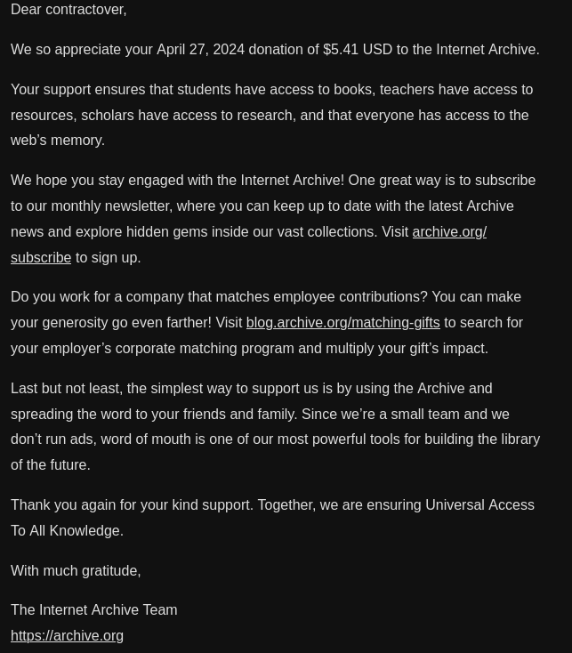

The Internet Archive does the thankless job of archiving billions of digital works. From Douments to Software and Even Websites thanks to the Wayback Machine.
Without their efforts it is very likely that many digital works will be lost for ever.
Today, The Internet Archive is being sued by a bunch of Money hungry soulless book publishers.
During the Pandemic, The Internet Archive released a digital library. It works the exact same way a real library works but digital.
These book publishers claim that this is theft, which is very funny as they steal more than anyone.
Currently the Internet Archive is in a law suit over this. If they lose it, which I think they will. There will be massive consequences.
As quoted from a techradar article
"the Internet Archive loses these cases and is forced to remove the content and possibly pay damages? Certainly, the success in one case has led to the other and will surely lead to more. Soon every Intellectual Property holder will be going after the Internet Archive and soon it will succumb and disappear."
Well there really isn't much we can do. But that dosen't mean there is nothing that someone could do to help.
Show them that their abuse will get them no where in their quest for ever grater profits.
Here are the Publishers that you should boycott:
1- Harpercollins
2- Wely
3- Penguin Random House LLC / PenguinBooks
4- Hachette Book Group
The Internet Archive is a nonprofit. That means that they need donations to survive.
If you are in a position where it is financially possible for you to donate, please do so.
A few days ago I myself donated to the InternetArchive.
